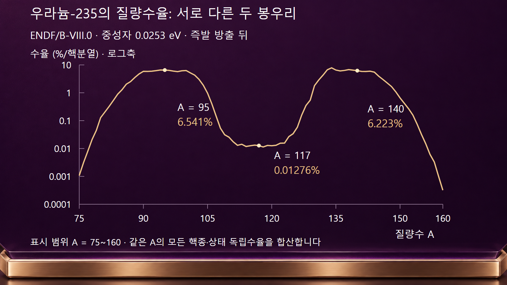
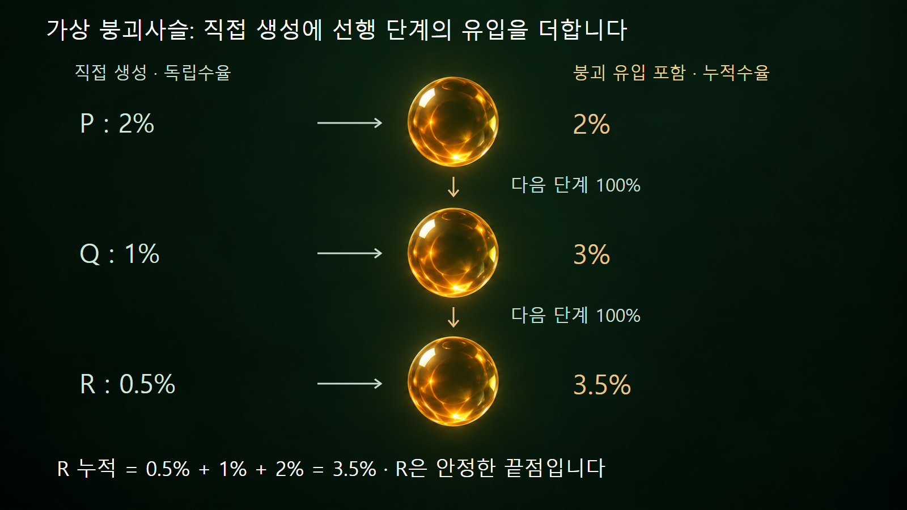

질량·에너지와 핵반응 · 036
핵분열생성물 수율
핵분열 한 번당 생성수와 붕괴사슬의 누적량을 구분합니다
수율은 핵분열 한 번당 특정 생성물이 평균 몇 개 만들어지는지를 나타냅니다. 모든 수율을 확률처럼 합해 100%로 맞추면 안 됩니다. 무엇을 하나로 세는지, 즉발중성자 방출 전후 중 어느 단계인지, 붕괴로 유입된 생성물까지 포함했는지를 먼저 구분합니다.
1. 사건 수와 생성물 수는 다릅니다
두 무거운 조각을 만드는 이체 핵분열을 100번 관찰하면 무거운 생성물은 200개 생깁니다. 가상의 특정 생성물이 그중 6개라면 수율은 핵분열당 0.06개, 또는 핵분열 100회당 6개인 6%입니다. 그러나 무작위로 고른 생성물 하나가 그 종류일 비율은 6/200 = 3%입니다. 분모가 핵분열 사건인지 생성물 전체인지에 따라 숫자가 두 배 달라집니다.
이 때문에 모든 무거운 생성물의 독립수율을 더하면 핵분열당 약 2개, 백분율 표시로 약 200%입니다. 수율은 기대 생성수이며 배타적인 사건 확률 목록이 아닙니다. 삼체 핵분열에서 나오는 가벼운 하전입자까지 포함하면 합이 조금 커질 수 있으므로, 자료의 포함 범위를 확인해야 합니다.
2. 즉발중성자가 나온 뒤의 핵종을 셉니다
핵이 막 갈라질 때의 일차 분열조각은 들뜬 상태일 수 있습니다. 조각이 즉발중성자를 방출하면 질량수 A가 감소합니다. ENDF 형식의 독립수율은 통상 이 즉발 방출 뒤, 베타붕괴와 지발중성자 방출 전의 직접 생성물을 다룹니다. [2] 따라서 즉발중성자 방출 전 조각질량 분포와 같은 그래프로 취급하면 안 됩니다.
핵종별 수율에는 원자번호 Z, 질량수 A뿐 아니라 바닥상태와 준안정상태의 구분도 필요합니다. 같은 A의 서로 다른 Z와 핵상태에 대한 독립수율을 더하면 즉발중성자 방출 뒤의 질량수율 Y(A)를 얻습니다. 질량수율만으로는 어느 화학 원소가 얼마나 생겼는지 복원할 수 없습니다.
| 수율의 종류 | 합산하는 대상 | 혼동하면 안 되는 값 |
|---|---|---|
| 독립수율 YI | 직접 만들어진 특정 핵종·상태 | 선행핵종 붕괴의 추가 유입 |
| 질량수율 Y(A) | 같은 A의 모든 독립수율 | 특정 원소 하나의 수율 |
| 누적수율 YC | 직접 생성과 붕괴사슬 유입 | 임의 시각의 실제 잔존 원자 수 |
| 사슬수율 | 정의된 질량사슬의 최종 생성물 기여 | 지발중성자 이동을 무시한 단순 동일시 |
3. 예시 1 — 평가자료의 두 봉우리를 읽습니다
여기서는 재현 가능한 예로 우라늄-235, 입사중성자 에너지 0.0253 eV 자료를 사용합니다. [1] 최신 자료라는 뜻이 아니라 비교에 사용할 판본을 고정한 것입니다. MF=8, MT=454의 핵종·상태별 독립수율 1,247개를 질량수별로 합쳤으며, 전체 합은 반올림 오차 범위에서 2입니다. 그래프는 실제 평가값의 질량수율을 표시합니다.
A = 95의 합은 약 0.06541개/핵분열, 즉 6.541%입니다. A = 140에서는 약 6.223%, 가운데 A = 117에서는 약 0.01276%입니다. 같은 평가값으로 100만 회 핵분열을 가정하면 A = 95의 기대 생성수는 약 65,409개입니다. [1] 이는 그 질량수를 갖는 여러 원소와 핵상태의 합이며 특정 핵종 65,409개라는 뜻은 아닙니다.
두 봉우리는 많은 사건에서 비대칭 분열이 우세함을 보여 줍니다. 매번 A = 95와 A = 140으로만 갈라진다는 뜻은 아닙니다. 로그 세로축에서는 같은 간격이 같은 차이가 아니라 같은 배수를 나타냅니다. 또한 특정 질량의 상대편 조각을 이 단일 분포만으로 정할 수 없으며, 중성자 방출과 조각 사이 상관관계도 필요합니다.

4. 예시 2 — 붕괴 유입을 더하면 누적수율이 됩니다
실제 핵종이 아닌 가상의 세 단계 P → Q → R을 생각합니다. 각 단계의 독립수율을 각각 2%, 1%, 0.5%로 정하고, P와 Q는 다음 단계로 100% 붕괴하며 다른 분기·포획·지발중성자 방출은 없다고 가정합니다. R은 이 예시에서 안정한 끝점입니다. P의 누적수율은 2%, Q는 1 + 2 = 3%, R은 0.5 + 3 = 3.5%입니다.
100만 회 핵분열 뒤 직접 만들어지는 P·Q·R은 기대값으로 각각 20,000·10,000·5,000개입니다. 충분히 시간이 지나면 이 경로에서는 R 35,000개가 남습니다. 그렇다고 세 누적수율 2 + 3 + 3.5 = 8.5%를 더해 서로 다른 원자 85,000개가 있었다고 해석하면 안 됩니다. 같은 계보가 P와 Q를 거쳐 R이 되는 동안 여러 단계의 누적량에 반영되기 때문입니다. 이 세 핵종은 전체 생성물의 일부만 나타냅니다.

5. 분기와 지발중성자는 사슬의 연결을 바꿉니다
앞 예시에서 Q가 R로 가는 비율만 80%로 바뀌고 나머지 20%는 다른 끝점으로 간다고 가정하면, R의 누적수율은 0.5 + 0.8 × 3 = 2.9%가 됩니다. P에서 Q로의 전달은 여전히 100%이므로 Q의 누적수율은 3%입니다. 100만 회 기준 R의 최종 기대량은 29,000개이고, 다른 분기로 6,000개가 이동합니다. 분기비를 곱하지 않고 모든 선행수율을 더하면 과대평가합니다.
보통의 베타붕괴만 있으면 A는 유지되지만, 지발중성자 방출이 있으면 다른 A의 사슬로 이동합니다. 그래서 즉발 방출 뒤 같은 A를 모은 질량수율과 충분한 붕괴 뒤의 사슬수율이 반드시 일치하지는 않습니다. 중성자 포획으로 새로 생긴 핵종은 붕괴 유입과 다르며, 누적 핵분열수율에 그 포획 생성량을 포함하지 않습니다. [3]
6. 수율표만으로 방사능을 계산할 수는 없습니다
수율은 생성원항을 정하는 자료입니다. 핵분열률이 F이면 특정 핵종의 직접 생성률은 F × YI입니다. 가상의 F = 1012회·s−1, YI = 0.02에서는 초당 2 × 1010개가 직접 생성됩니다. 실제 재고를 구하려면 여기에 선행핵종 붕괴 유입을 더하고, 해당 핵종의 붕괴와 중성자 흡수로 사라지는 양을 빼야 합니다.
방사능은 그 시각의 원자 수와 붕괴상수의 곱입니다. 수율이 크다고 항상 방사능이나 붕괴열이 가장 큰 것은 아니며 반감기, 방출에너지, 조사·냉각 시간도 작용합니다. 또 붕괴사슬을 명시적으로 풀면서 생성원항에 누적수율까지 넣으면 선행핵종의 기여를 두 번 셀 수 있습니다. 계산 코드가 독립수율과 붕괴망을 쓰는지, 특정 조건의 누적수율 근사를 쓰는지 구분합니다.
7. 다른 수율곡선을 비교할 때 맞추는 조건
우라늄-235와 플루토늄-239, 열중성자와 고속중성자는 같은 수율분포를 갖지 않습니다. 비교할 때는 분열 핵종과 입사에너지, 즉발중성자 방출 전후, 핵상태 포함 범위, 백분율의 분모, 평가자료 판본을 맞춥니다. 원자료가 특정 에너지의 평가값인지 여러 에너지를 평균한 측정값인지도 확인합니다. 서로 다른 조건의 곡선을 겹쳐 놓고 곧바로 자료 오류로 판단하지 않습니다.
독립수율은 직접 생성의 출발점을, 누적수율은 붕괴 연결을 포함한 도달량을, 시간별 핵종재고는 운전·붕괴 이력의 결과를 나타냅니다. 이 세 층위를 구별해야 핵분열생성물 수율을 붕괴열, 방사선원과 연료 내 핵종 변화에 올바르게 연결할 수 있습니다.